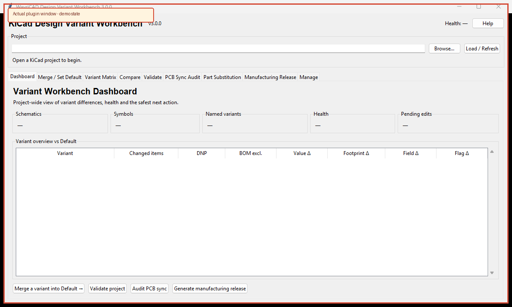

Review and manage KiCad 10 variants while preserving the effective configuration of every unaffected variant.

.kicad_sch.| Tab | Use |
|---|---|
| Merge / Set Default | Promote, preserve, or swap Default while semantically rebasing other variants. |
| Variant Matrix | Filter and stage named-variant Value, Footprint, field, DNP, BOM, POS, board, and simulation changes. |
| Compare | Read-only property comparison with CSV export. |
| Validate | Find unsafe shared instances, redundant overrides, empty fitted fields, and inconsistent flags. |
| PCB Sync Audit | Read-only schematic-to-board parity check with repair guidance. |
| Part Substitution | Stage guarded substitutions after electrical and footprint compatibility confirmation. |
| Manufacturing Release | Preview exact kicad-cli commands, validate inputs, and generate a hashed release manifest. |
| Manage | Rename, duplicate, delete, or clean named variants without changing Default. |
python kicad_variant_manager.py project.kicad_sch --list python kicad_variant_manager.py project.kicad_sch --lint python kicad_variant_manager.py project.kicad_sch --compare "<Default>" Production --csv compare.csv python kicad_variant_manager.py project.kicad_sch --promote Production --preview
Writing commands require interactive confirmation unless --yes is supplied. Lock checks, stale-input rejection, validation, backups, and atomic writes still apply with --yes.
| Symptom | Resolution |
|---|---|
| Apply blocked by lock files | Save and close every KiCad editor using this project, then preview again. |
| Changed since preview | Reload the project and regenerate the preview; another process changed an input. |
| PCB Sync errors | Update PCB from Schematic for the intended variant, save both files, reload, and audit again. |
| Release command fails | Review the exact command, selected variant support, kicad-cli version, validation errors, and output permissions. |
The tool does not invent symbol pin mappings, infer substitution compatibility, or silently rewrite unsupported shared/multi-project instance structures. Manufacturing outputs remain subject to independent engineering and fabrication review.